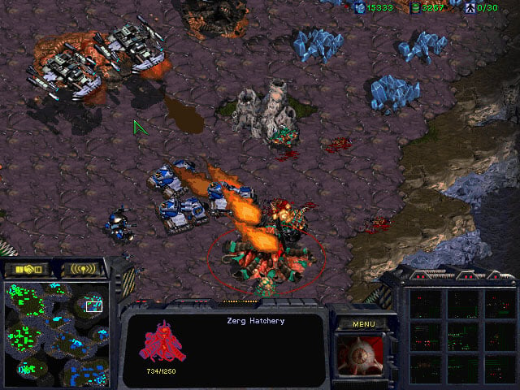
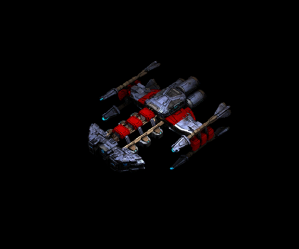
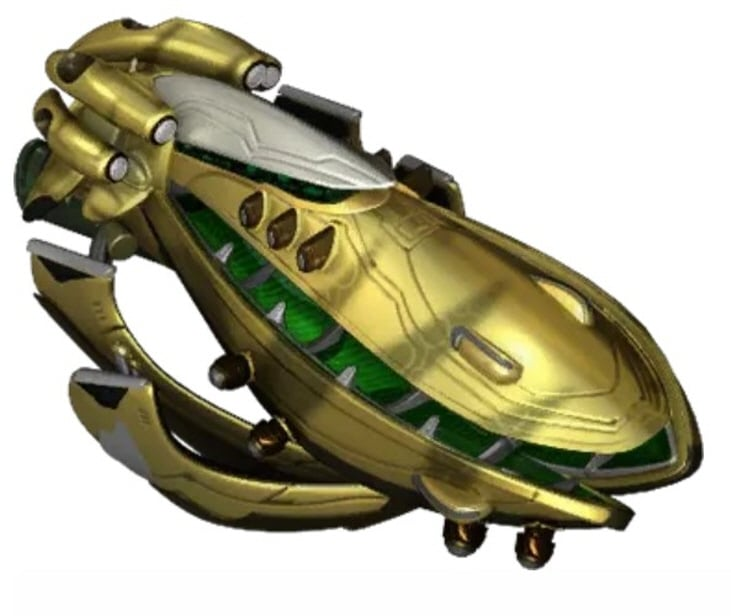
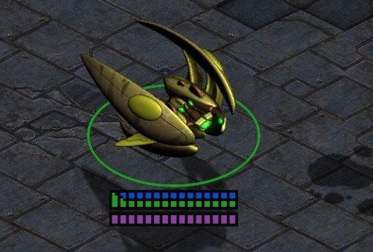
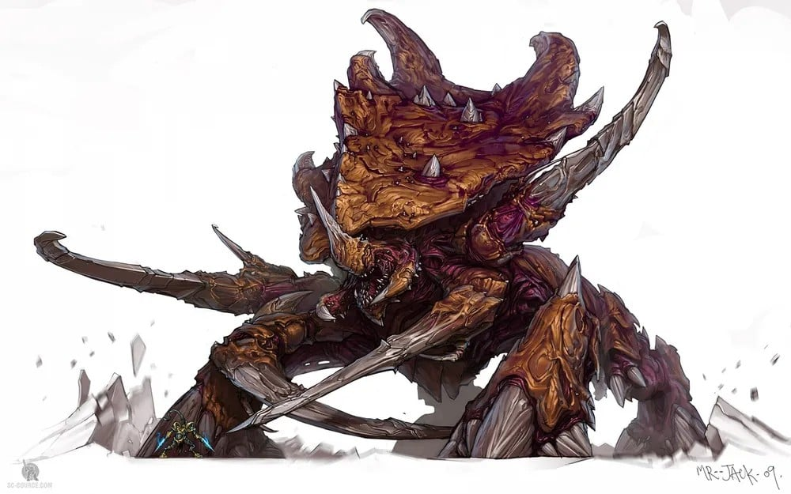
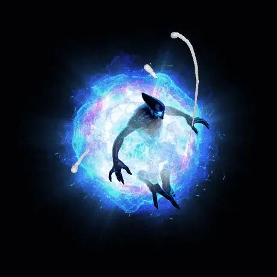

강력한 한방의 상징 야마토포의 공격력은 무려 260에 달해서 스타에서 이를 버틸 수 있는 유닛은 몇 되지 않는다

같은 배틀크루저(체력 500)

캐리어(실드+체력 450)

아비터(실드+체력 350)

울라리(체력 400)

아칸(실드+체력 360)
질럿
테란의 가장 강력한 공격인 야마토포는 토스의 가장 약한 유닛조차 한방에 못 죽이는 것을 보면 토스가 얼마나 강력한 종족인지 알 수 있는 부분이다
스레프는 나온지 진짜 오래됐는데 아직도 종벨로 싸우네